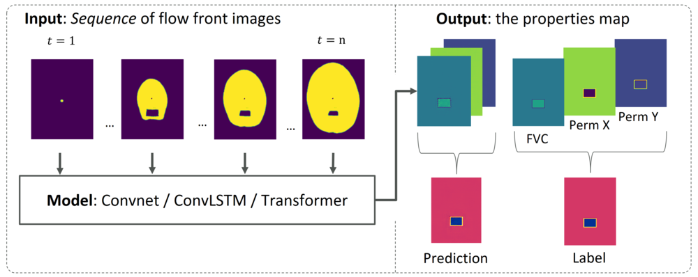
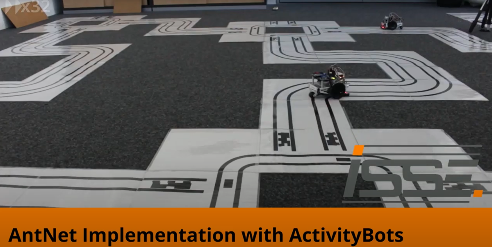
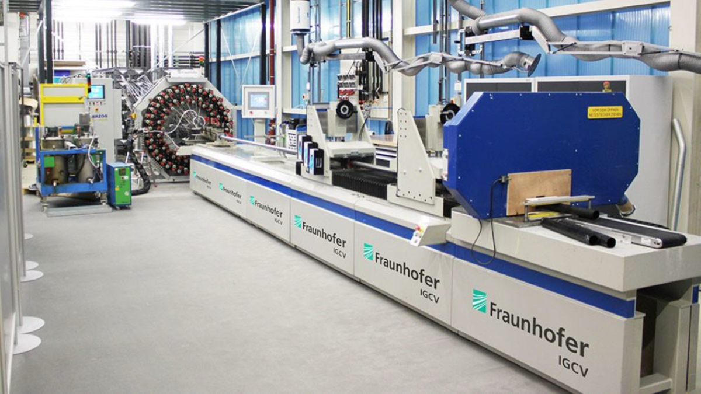
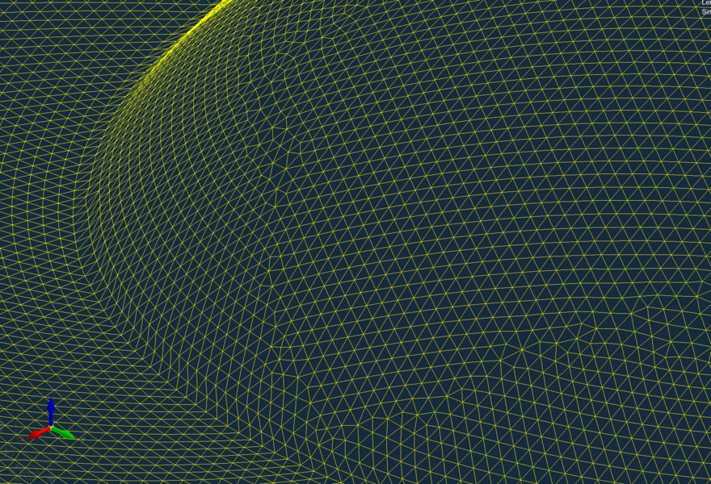
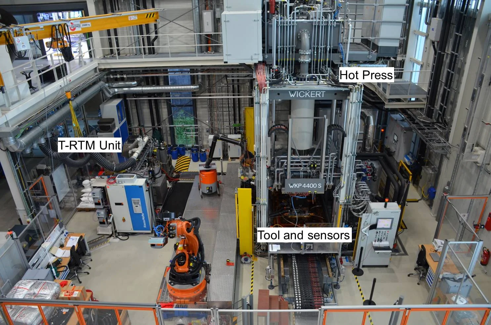

Work
My work spans both academic research and industry practice in NLP, RAG, Machine Learning and Deep Learning. Below are my key publications and projects, from industry blog posts to peer-reviewed research, listed from most recent to earliest.
Blog Series: Operationalisierung von KI-Lösungen (2025)
Why This Matters: Most AI projects fail not because of bad models, but because operationalization wasn't planned from the start. This three-part series on XITASO's tech blog shows how to bridge the gap from PoC/MVP to production-ready AI platforms—covering scaling, cost optimization, monitoring, maintenance, and security.
Co-authored with Dr. Richard Nordsieck, drawing from real project experience including a GenAI assistant serving 70,000+ users.
- Part 1: Skalierung & Kostenoptimierung – Caching strategies, multi-model routing, Kubernetes autoscaling
- Part 2: Monitoring, Backup & Model-Retraining – Drift detection, backup orchestration, maintenance strategies
- Part 3: Security-by-Design – MLOps security, prompt injection defense, best practices guide

Machine Learning for Carbon Fiber Reinforced Polymer Production - Dissertation, defended December 2023
Why This Matters: Carbon fiber composites are crucial for lightweight aerospace and automotive applications, but their manufacturing is expensive and prone to defects. This research demonstrates how AI can reduce production costs, detect defects in real-time, and enable quality prediction without destructive testing—making high-performance materials more accessible and sustainable.
Complete study with three different use cases for Machine Learning for (Carbon) Fiber Reinforced Polymers. (Picture above shows all examining professors and me, relieved after the rigorosum. From left to right: Prof. Reif, Assoz.Prof. Fauster, me, Prof. Hähner and Prof. Bauer)
Fiber reinforced polymer composites offer a range of properties that are essential for many applications where the highest performance demands are placed on high-end components. These include targeted stiffness combined with lightness, and they are also corrosion resistant. As a result, they have become an integral part in the respective products for aerospace, automotive, construction and sports equipment, among others. However, these outstanding properties come at a price: the production of composite materials is significantly more complex and thus more expensive than, for example, metal or aluminum castings. The complexity is inter alia related to a lower degree of automation, which can be traced back to strongly fluctuating starting materials, especially in the case of textile semi-finished products, and the associated manual work steps. This is the starting point of the present work. Different possibilities for the analysis and optimization of a process family for fiber composites are presented: Liquid Composite Molding. Machine Learning methods are used for this purpose. The following scientific contributions are made: Thus, (1) ways to reconstruct the flow front and detect defects at runtime based on convolutional neural networks are discussed. Furthermore, it is shown how future progress of a process could be based on the course of this injection process in order to be able to counteract if necessary. In addition, the (2) properties of the textile are generated by different variants of neural networks, CNNs, ConvLSTMs and Transformers, based on the progress of each injection process as 2D maps and stored as a digital twin. These maps can be used for post-processing verification of the components or as a quality feature for further processing or life cycle of the product. Finally, (3) Reinforcement Learning, and neural network methods are used to control variants of an injection process so that fewer defects occur. These applications show the possibilities of Machine Learning in the context of fiber composite production, and possibilities how to work (4) with deep neural networks despite data poverty are shown. This includes, above all, sim-to-real transfer learning, in which models are "pre-trained" on data from the simulation and then retrained or "fine-tuned" with a small amount of real data. Thus, deep networks can be preconditioned with large simulative data sets to be fine-tuned to the real case.
OPUS Website, PDF is available there

Control of RTM processes through Deep Reinforcement Learning (2023), presented at the International Conference on Machine Learning and Applications (ICMLA) 2023, Jacksonville, FL
Impact: Demonstrated that AI-driven process control can reduce manufacturing defects by 50%, cutting failure rates from 54% to 27% without requiring complex mathematical models—opening new possibilities for adaptive manufacturing systems.
Work on the control of the process based on Deep Reinforcement Learning.
Resin transfer molding (RTM) is a composite manufacturing process that uses a liquid polymer matrix to create complex-shaped parts. There are several challenges associated with RTM. One of the main challenges is ensuring that the liquid polymer matrix is properly distributed throughout the composite material during the molding process. If the matrix is not evenly distributed, the resulting part may have weak or inconsistent properties. This is the challenge we tackle with the approach presented in this work. We implement an online control using deep reinforcement learning (RL) to ensure a complete impregnation of the reinforcing fibers during the injection phase, by controlling the input pressure on different inlets. This work uses this self-learning paradigm to actively control the injection of an RTM process, which has the advantage of depending on a reward function instead of a mathematical model, which would be the case for model predictive control. A reward function is more straightforward to model and can be applied and adapted to more complex problems. RL algorithms have to be trained through many iterations, for which we developed a simulation environment with a distributed and parallel architecture. We show that the presented approach decreases the failure rate from 54 % to 27 %, by 50 % compared to the same setup with steady parameters.
Inferring material properties from CFRP processes via Sim-to-Real learning (2023)

Key Innovation: Created a "digital twin" that predicts material properties during manufacturing using AI trained on simulation data and fine-tuned with minimal real-world data—solving the data scarcity problem that typically prevents deep learning in manufacturing.
Journal paper greatly extending the work from Permeabilitynets (2021). (Accepted at the International Journal of Advanced Manufacturing Technology)
Carbon fiber reinforced polymers provide favorable properties such as weight-specific strength and stiffness that are central for certain industries, such as aerospace or automotive manufacturing. Liquid composite molding (LCM) is a family of often employed, inexpensive, out-of-autoclave manufacturing techniques. Among them, resin transfer molding (RTM), offers a high degree of automation. Herein, textile preforms are saturated by a fluid polymer matrix in a closed mold. Both impregnation quality and level of fiber volume content are of crucial importance for the final part quality. We propose to simultaneously learn three major textile properties presented as a three-dimensional map based on a sequence of camera images acquired in flow experiments. The three properties are fiber volume content and permeability in X and Y direction. Finally, we show how simulation-to-real transfer learning can improve a digital twin in CFRP manufacturing, compared to simulation-only models and models based on sparse real data. The best model, trained on the most realistic simulation data outperforms the same model trained on less sophisticated simulation data by 4 percent points and 0.34 points in intersection over union, more than tripling this metric.

ICMLA 2021: PermeabilityNets: Comparing Neural Network Architectures on a Sequence-to-Instance Task in CFRP Manufacturing
Here, we used real data from an RTM-like process for the first time, we predicted maps of permeability for the RTM process in collaboration with Ewald Fauster of the Montanuniversität Leoben.
Carbon fiber reinforced polymers (CFRP) offer highly desirable properties such as weight-specific strength and stiffness. Liquid composite moulding (LCM) processes are prominent , economically efficient, out-of-autoclave manufacturing techniques and, in particular, resin transfer moulding (RTM), allows for a high level of automation. There, fibrous preforms are impregnated by a viscous polymer matrix in a closed mould. Impregnation quality is of crucial importance for the final part quality and is dominated by preform permeability. We propose to learn a map of permeability deviations based on a sequence of camera images acquired in flow experiments. Several ML models are investigated for this task, among which ConvLSTMs achieve an accuracy of up to 96.56%, showing better performance than the Transformer or pure CNNs. Finally, we demonstrate that models, trained purely on simulated data, achieve qualitatively good results on real data.

ACSOS 2021: A Real-World Realization of the AntNet Routing Algorithm with ActivityBots
In this work, my students Jonas Wilfert and Niklas Paprotta used the AntNet routing algorithm with ActivityBots. It was great to use these bots, normally in use for an early bachelor student practical class. Here's the abstract:
To ease teaching self-organizing systems design, we implemented the AntNet routing algorithm for real-world application using educational robots called ActivityBot. Using line sensors and ultrasonic distance sensors, the robotic ants traverse a tiled graph printed on paper, collectively converging to the shortest path. In our descriptions, we address the challenges to face when employing such self-organizing systems on educational hardware and provide a video on YouTube: https://youtu.be/JFduHJ0o0UM

ETFA 2021: Genetic Programming for Fiber-Threading for Fiber-Reinforced Plastics
In this work, my student Jonas Wilfert investigated the application of genetic algorithms on a part of the pultrusion process pipeline. Great working together with the Fraunhofer IGCV in Augsburg, namely Frederik Wilhelm. Here's the abstract:
Setting up fiber-threading for a pultrusion line is tedious, error prone and takes a long time. Between 100 and 1000 fibers have to be arranged into a two-dimensional shape, which have to be threaded between several support plates without causing crossovers. When manually planning this process based on intuition, it is hard to keep track of the complexity. This slows the process down to where it can take several hours or several days, and shortening this duration reduces the cost considerably. As planning the setup takes up a large chunk of time, we are proposing a simulation and an algorithm to automatically calculate how the fiber bundles need to be threaded from the creels through the support plates to result in the desired shape. Using a three-dimensional simulation for collision detection in conjunction with a genetic algorithm, we are able to shorten the planning of the fibers to around 10 minutes on a modern 8-core personal computer. Based on this data, further work can be done to further improve, visualize or permanently store the data in a digitized company.

Using mesh convolutions and graph neural networks to enable predictions for RTM in 3D space
Master thesis by my student Lukas Lodes on which he wrote a lovely blog article in German. Previous works such as FlowFrontNet were focused on the manufacturing of plates, which is a big abstraction since real carbon composites can have various shapes. This thesis focuses on using graph neural nets with the already existing mesh to take the leap into the 3D space.
ECML 2020: FlowFrontNet: Improving Carbon Composite Manufacturing with CNNs
Carbon fiber reinforced polymers (CFRP) are light yet strong composite materials designed to reduce the weight of aerospace or automotive components – contributing to reduced emissions. Resin transfer molding (RTM) is a manufacturing process for CFRP that can be scaled up to industrial-sized production. It is prone to errors such as voids or dry spots, resulting in high rejection rates and costs. At runtime, only limited in-process information can be made available for diagnostic insight via a grid of pressure sensors. We propose FlowFrontNet, a deep learning approach to enhance the in-situ process perspective by learning a mapping from sensors to flow front "images" (using upscaling layers), to capture spatial irregularities in the flow front to predict dry spots (using convolutional layers). On simulated data of 6 million single time steps resulting from 36k injection processes, we achieve a time step accuracy of 91.7% when using a 38 × 30 sensor grid with 1 cm sensor distance in x- and y-direction. On a sensor grid of 10×8, with a sensor distance of 4 cm, we achieve 83.7% accuracy. In both settings, FlowFrontNet provides a significant advantage over direct end-to-end learning models.

ETFA 2020: Towards Real-time Process Monitoring and Machine Learning for Manufacturing Composite Structures
Components made from carbon fiber reinforced plastics (CFRP) offer attractive stability properties for the automotive or aerospace industry despite their light weight. To automate the CFRP production, resin transfer molding (RTM) based on thermoset plastics is commonly applied. However, this manufacturing process has its shortcomings in quality and costs. The project CosiMo aims for a highly automated and costattractive manufacturing process using cheaper thermoplastic materials. In a thermoplastic RTM (T-RTM) process, the polymerization of epsilon-caprolactam to polyamide 6 is investigated using an "intelligent tooling". Multiple sensor types integrated into the mold allow for tracking of several process-relevant variables, such as material flow and state of polymerization. In addition to the evaluation of the T-RTM process, a digital twin helps to visualize progress and to make predictions about possible problems and countermeasures based on machine learning. In this paper, the combination of software and hardware developments is described which will help to validate an optimal process setup for an industrial CFRP demonstrator.
OCDDC 2018: Transfer Learning for Optimization of Carbon Fiber Reinforced Polymer Production
The main problem that keeps many areas of research from using Deep Learning methods is the lack of sufficient amounts of data. We propose transfer learning from simulated data as a solution to that issue. In this work, we present the industrial use case for which we plan to apply our transfer learning approach to: the production of economic Carbon Fiber Reinforced Polymer components. It is currently common practice to draw samples of produced components statistically and perform destructive tests on them, which is very costly. Our goal is to predict the quality of components during the production process. This has the advantage of enabling not only on-line monitoring but also adaptively optimizing the manufacturing procedure. The data comes from sensors embedded in a tooling in a Resin Transfer Molding press.
Academic Service & Reviewing
I have served as a peer reviewer for leading conferences and journals, ensuring quality in AI and manufacturing research:
- ECML-PKDD 2020, 2021, 2022
- NeurIPS workshop on Machine Learning and the Physical Sciences 2020, 2021
- Journal for Composite Materials 2021, 2022
- Computers in Industry 2023
- Engineering Applications of Artificial Intelligence 2023